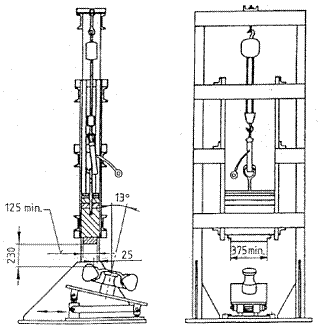
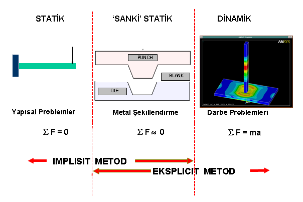
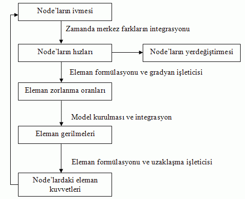
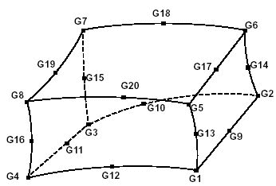
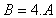
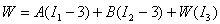

* Not: Bu makalenin daha fazla formül ve açýklama içeren versiyonu aþaðýdaki linkten indirilebilir: Jant-Dinamik-Darbe-Testi-Modellemesi.doc (MS Word dökümaný, 2,48MB)
Özet
Bu çalýþmada, hafif alaþýmlý otomotiv jantýna, standartlara göre yapýlan darbe testinin simülasyonlarý, mühendislik yazýlýmlarý ile gerçekleþtirilmiþtir. Darbe testi, eþdeðer test þartlarý modelize edilerek non-lineer yapýsal analizi sonlu elemanlar metodu kullanýlarak yapýlmýþtýr. Modelleme, uluslararasý darbe test cihazý standartlarý ve ISO 7141 standardý esas alýnarak yapýlmýþtýr. Otomobil jantý ve çelik darbe baþlýðý nümerik modeli PATRAN yazýlýmý ile oluþturulmuþ ve darbe testi, yatayla 13º eðimli aparata bijonlardan sabitlenen jant kenarýna 1 tonluk çelik darbe baþlýðýn 230mm yükseklikten düþürülmesi ile gerçekleþtirilmiþtir.
Yapýsal dinamik performansýn belirlenmesi için modelize edilen otomobil jantý darbe testi analizleri DYTRAN yazýlýmý kullanýlarak gerçekleþtirilmiþtir. Dinamik yük modelleme ile elde edilen sayýsal sonuçlar ile darbe testinden elde edilen deðerler karþýlaþtýrýlmýþtýr. Yapýsal analizlerde büyük öneme sahip olan, jantta oluþan maksimum deformasyon miktarý, eðer oluþacaksa plastik deformasyon miktarý ve bölgeleri, maksimum gerilmelerin büyüklüðü ve oluþacaðý bölgeler belirlenmiþtir. Sonuç olarak çalýþma ile darbe testlerinde sonlu elemanlar yönteminin uygulanabilirliði ve tasarým sürecindeki ürünlere mekanik testler uygulanmadan ürün uygunluðunun tespiti için mühendislik simülasyon metotlarýnýn uygulanabilirliði ile ilgili çalýþmalarýn yapýlabilirliði gösterilmiþtir.
1. Giriþ
Otomobil üreticileri ülkelerindeki hükümetlerin düzenlemelerine ve yerel standartlarýna baðlý olarak güvenilir, konforlu, ekonomik yakýt tüketimine sahip araç geliþtirme çabasý içindedirler. Statik ve dinamik sistemler etkisindeki araç üzerindeki süspansiyon sistemi ve buna baðlý olarak tekerler sistemi komple araç üzerinde büyük öneme sahiptir. Özellikle stil, aðýrlýk, üretilebilirlik ve performans olmak üzere jant tasarýmýnda bu dört ana unsur dikkate alýnmaktadýr. Tekerleklerin ve jantlarýn normal sürüþ veya sert sürüþ karþýsýndaki mekanik performanslarýn bulunmasý için özellikle üç metot uygulanmaktadýr. Bunlar sýrasý ile dinamik darbe, radyal yorulma ve döner yorulma etkilerinin araþtýrýlmasý olarak bilinmektedir. Dinamik darbe testleri ile minimum mekanik performans ihtiyaçlarý ve eksenel (veya yanal) kenarlarýn çarpýþma karakteristiði anlaþýlabilinmektedir.
Darbe etkisini daha iyi anlayabilmek için aþaðýdaki tanýmlamalara kýsaca deðinilebilir. Teknolojinin geliþmesiyle beraber birçok alanda meydana gelen deðiþimler insan yaþamýna getirdikleri kolaylýklarýn yaný sýra daha önce hiç karþýlaþýlmamýþ birçok problemi de beraberlerinde getirmiþlerdir. Bu problemlerinden biri de hareketli sistemlerin elemanlarýnda ani yük deðiþimlerinden kaynaklanan problemlerdir. Ývmeli hareketten kaynaklanan atalet kuvvetlerinin eleman üzerinde yarattýðý etkiler daha önceden tahmin edilmeyecek sonuçlar doðurabilir. Dinamik çarpýþmalarýn sonucunda meydana gelen ani ivme düþüþleri, eleman üzerine etkiyen kuvvetlerin sürekli olarak deðiþmesi nedeniyle oluþan ani ivme deðiþimleri de ayný þekilde beklenmeyen sonuçlar doðurabilir. Bu ani ivme deðiþimlerinin yarattýðý kuvvetlere dinamik kuvvetler adý verilir.
Sonuçta biz, elemanlarýn ivmeli hareketlerinden kaynaklanan eylemsizlik kuvvetlerine, zamanla deðiþim gösteren etken kuvvetlere, sisteme çok kýsa zaman aralýklarýnda tesir eden ani kuvvetlere ve çarpýþmalardan doðan etkilere hep dinamik kuvvetler diyoruz. Dinamik kuvvetlerin statik kuvvetlerden en önemli farklýlýðý etkidikleri cisim üzerinde, yarattýklarý gerilimlere ve þekil deðiþimlerine statik kuvvetler gibi kademeli olarak artarak deðil, kendi koþullarýnýn yarattýðý karakterde bir etki göstermesidir. Bu nedenle dinamik gerilim ve þekil deðiþimi hesaplarýnda da baþka prensipler uygulanýr.
Darbe deney düzeneði olarak kullanýlan muhtelif düzenekler mevcuttur. Bu projede seri üretimi Türkiye'de gerçekleþtirilen A360 malzemesinden imal edilen otomobil jantýnýn ISO 7141'e dinamik darbe düzeneðine göre yapýsal analizi, düzeneðin belirlediði sýnýr þartlarýna göre incelenmiþtir.
Jant modeli güçlü bir model oluþturma yazýlýmý olan CATIA'da oluþturulmuþtur, pre-processing ve post-processing iþlemi olarak non lineer explicit sonlu elemanlar yöntemi olan DYTRAN programý kullanýlacaktýr. Kýsaca explicit yöntem non lineer sonlu elemanlar yönteminde belli bir zaman noktasýnda adýmlý denge denklemlerinin doðrusallaþtýrýlmasýnda açýk "explicit" zaman adýmý yaklaþýmý olarak tanýmlanýr.
Çalýþmadaki amaç, darbe deneyinde dinamik kuvvetler etkisi altýnda kalan otomobil jantýnýn gerilme-gerinim deðerlerini elde ederek malzemenin dayanabileceði gerilme deðerleriyle karþýlaþtýrýp, önceden oluþan tasarým yanlýþlarýný daha imalata geçmeden belirleyip bunlarý ortadan kaldýrmaktýr. Bu çalýþmanýn ýþýðýnda kullanýlan yöntemin sýrasý itibariyle bu iþlem dinamik yüke maruz kalan birçok makine parçasýnýn gerilme deðerlerinin incelenmesinde yöntem olarak kullanýlabilecektir.

Þekil1. Test Makinesi
2. Eksplisit Yöntem
Darbe gibi kuvvetlerin çok kýsa zaman aralýklarda büyüklüklerinin ve yönlerin deðiþtiði durumlarda statik problemlerinin çözümünde kullanýlan implisit metot yerine statik kuvvetlerin yanýnda dinamik kuvvetleri de dikkate alan eksplisit kodlu yazýlýmlar kullanýlmaktadýr. Eksplisit metodunda sistem üzerine etkiyen kuvvetlerin zamanla deðiþimi söz konusudur. Jant darbe testi dinamik bir problem olduðu için eksplisit metot tercih edilmiþtir.

Þekil 2. Eksplsit Yöntem

Þekil 3. Eksplsit Çözüm Prosedürü
3. Sonlu Eleman Model Özellikleri
Eksplisit yöntemlerde akýþkan haricindeki elemanlar Lagrange elemaný olarak modellenmektedir. Sonuçlarýn daha hassas olmasý için elemanlarýn þekil ve biçimlerin düzgünlüðü önem arz etmektedir. Jant'ýn sonlu elemanlar modeli oluþturulurken elemanlarýn düzenliliðine ve üzerindeki lastiðin homojen eleman yapýsýna sahip olmasýna dikkat edilmiþtir. Çözüm zamanýnýn azaltýlmasý ve kesitteki gerilme deðiþimlerinin izlenebilmesi için model yarým olarak düþünülmüþtür. Jant darbe testinde jant ve lastik CHEXA (Dytran) katý eleman olarak seçilmiþtir. Jant ve lastik sonlu elemanlar yarým modelindeki toplam eleman sayýsý 18325 düðüm sayýsý 23874 olarak elde edilmiþtir. Kabuk olarak modellenen vurucu ise CQUAD (Dytran) kabuk eleman olarak seçilmiþtir. Vurucudaki toplam eleman sayýsý 800, düðüm sayýsý ise 861 olarak elde edilmiþtir. Adý geçen eleman þekilleri aþaðýda gözükmektedir.

Þekil 4. CHEXA Eleman Gösterimi
4. Malzeme Özellikleri
Jant darbe testi sonrasýnda hasarlarýn oluþmasý beklenilmektedir. Bu hasar etkilerinin gözlemlenebilinmesi için malzemenin plastik þekil deðiþtirme bölgesi de tanýmlanmalýdýr. Akma teorileri kýsmýnda adý geçen Von-Mises-Bilinear (çiftdoðrusal) malzeme modeli sonlu elemanlar modeli için seçilmiþtir. Çünkü bu malzeme modelinde plastik karakteristiklerde tanýmlanmaktadýr. Jant malzemesi için öngörülen alüminyumun mekanik özellikleri aþaðýdaki tablo da listelenmiþtir.
Elastisite Modülü |
70 GPa |
Poisson Oraný |
0,30 |
Akma Gerilmesi |
165 MPa |
Maksimum Kopma Gerilmesi |
235 MPa |
Sertleþme Gerinimi Üsteli |
0,545 |
Yoðunluðu |
2700 kg/m^3 |
Tablo1. Jant Malzeme Özellikleri
Lastik modellenmesi ise oldukça karmaþýk yapýdadýr. Özellikle doðrusal olmayana kauçuk malzemeler için Mooney-Rivlin malzeme modeli kullanýlmaktadýr. Hyperelastic (çok yüksek elastikiyete sahip sýkýþtýrýlamaz kauçuk malzeme) malzeme modeli için Mooney- Rivlin enerji yoðunluðu modelini kullanmaktadýr. Buna göre elastomer malzeme modelinin matematiksel modeli;
 olmak üzere,

Buna göre lastik malzemesi özellikleri aþaðýda verilmiþtir.
C10 |
14,14 MPa |
C01 |
21,26 MPa |
Yoðunluk |
2000kg/m^3 |
Poission Oraný |
0,45 |
Tablo2. Lastik Malzeme Özellikleri
|